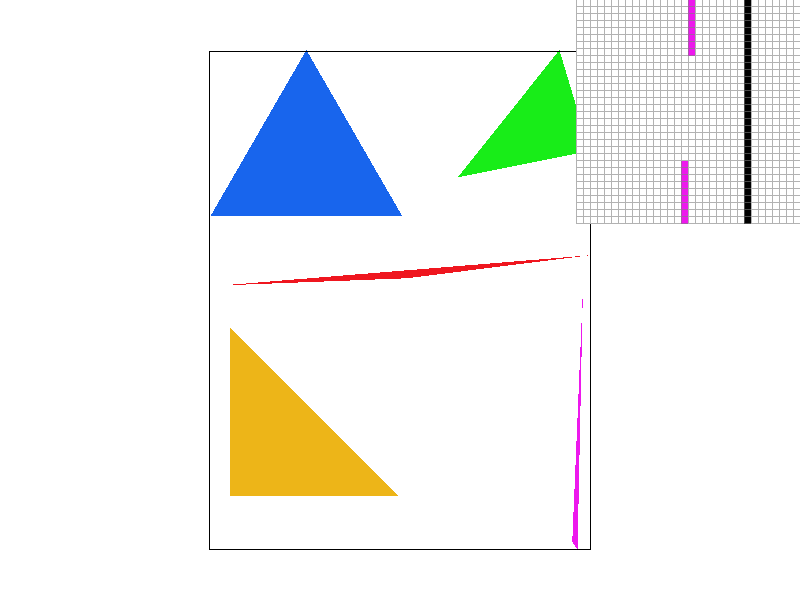
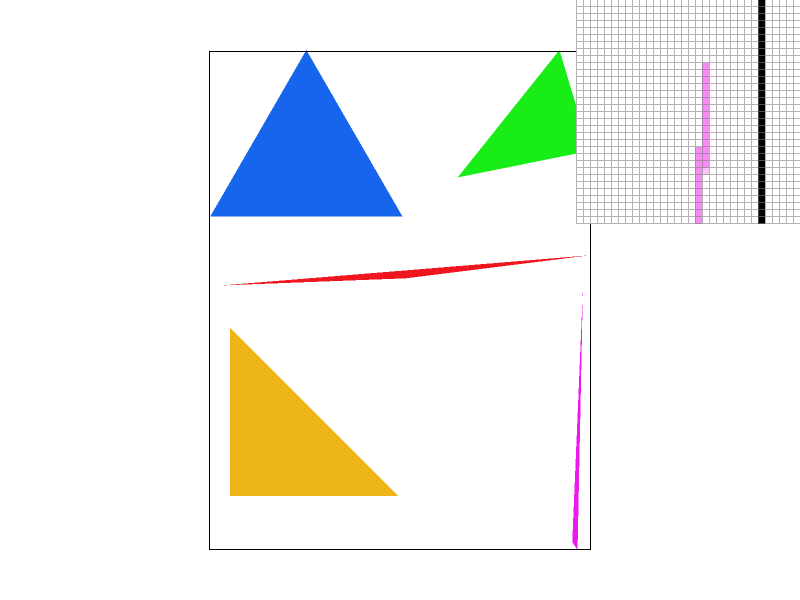
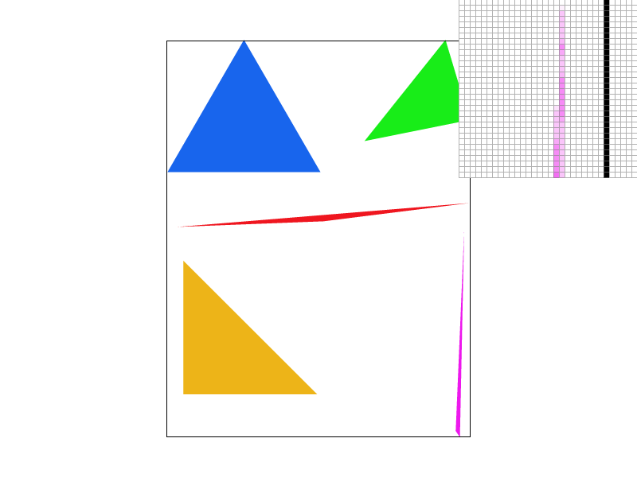
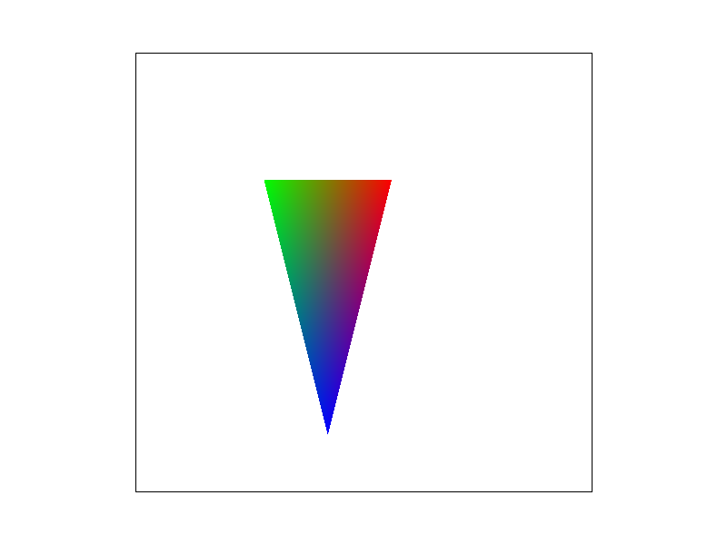
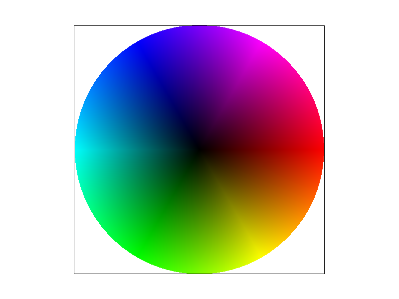

In this Project, I implemented basic rasterization with anti-aliasing methods such as supersampling. I also
implemented basic hierarchical transforms including translation, rotation, and scaling. Another main idea of this
project was texture mapping where we mapped textures onto 2d objects through various techniques such as Barycentric
coordinates to interpolate the textures of given coordinates. For texture mapping, the project supported two kinds of
Pixel Sampling Nearest Neighbour and Billinear and three kinds of level sampling 0-th, Nearest, and Billinear
Interpolation. As for my thoughts on this assignment, I found it certainly cemented the techniques we learned
in the lecture as I had to spend hours debugging and learning what was going wrong. I understood the differences
between the frame and sample buffer and why each was important. I learned about the importance of defining the
unwinding direction of the vertices. I learned to understand the partial derivatives and why they were important in
calculating the specific mip map level.
Task 1 - Drawing Single-Color Triangles
To render a triangle or polygon on a screen, the process begins by identifying the polygon's bounding
box. This is achieved by calculating the minimum and maximum values among the vertices' x and y coordinates.
The minimum values, after being floored, define the starting X and Y position of the bounding box, while the
maximum values, once ceiled, determine the ending X and Y positions. Following this, the algorithm
iterates from the bounding box's top left pixel’s center to its bottom right pixel’s center. For the center of
each subsequent pixel in the bounding box we determine through a point-in-triangle test if the center lies
within the triangle. If the test is positive, the pixel is rendered. This process is repeated across the entire
bounding box, ensuring that every potential pixel in the triangle is evaluated.
My algorithm is no worse than one that checks each sample within the bounding box of the triangle since
it essentially checks each within the bounding box of the triangle. Therefore, it cannot be any worse by
design.

Base Rasterization of Triangles
Task 2 - Antialiasing by Supersampling
For my supersampling algorithm, I dynamically increased the sample buffer size in response to increases
in the sample rate to accommodate for the subsamples. The modified rasterize triangle function now
populates the sample buffer with sub samples, coloring them if it passes the point in triangle test. I stored the
subsamples linearly for efficient and easier access during restoration to the frame buffer. As I
restored the sample buffer to the frame buffer I aggregated the RGB values across all subsamples for each pixel.
Supersampling smoothes out the jaggedness of the triangles by minimizing the rapid color shifts from the
background to the edges of the triangle creating a more balanced color representation.
Supersampling at 1px

Supersampling at 4px

Supersampling at 16px
When our sample rate is 1px we can see that the tip of the triangle is disconnected while as we increase
the sample rate from 1 -> 16 the edge becomes more and more continuous. This is caused because when we only
have one subsample we just check whether that pixel is in the triangle leaving us to a very
unbalanced image but as we increase the number of subsamples and start averaging out the colors we
increase the probability that these pixels will lie in the triangle allowing for a more smooth image.
Task 3 - Transforms
I rotated the right leg by -90 degrees and the left leg by 90 degrees, and adjusted both arms to a
45-degree
angle, aiming to give the robot a splits-like appearance.
Task 4 - Barycentric Coordinates
Barycentric coordinates are coordinates used to interpolate different attributes such as textures,
coordinates, colors by weighting the distance from a given point to the vertices of the triangle where a
point closer to vertex A is biased heavily more on A's values then B or C.

Illustration of color interpolation in a triangle using barycentric coordinates.
I created this SVG image to illustrate how Red, Green, Blue blend using barycentric coordinates
emphasizing the influence of proximity to the triangle vertices on the resulting color. The method assigns greater
weight to the vertex nearest to the given point, making the point’s color more influenced by that vertex
color. As a result, points near the vertex associated with Red, for example, exhibit a color closer to
Red. And at the midpoint between the Red and Blue vertices, we observe a purplish hue, signifying a blend of
the two colors. The midpoint between Green and Blue reveals a tealish shade, and the midpoint between Green and
Red presents a brownish color. These colors align with the expected results of mixing the given colors, showcasing
how barycentric coordinates can interpolate colors.

Image of a color wheel using barycentric coordinates for color interpolation.
Task 5 - Pixel Sampling for Texture Mapping
Pixel sampling involves determining the color and intensity of pixels to display to the screen from a
given source material.
Nearest Neighbor Sampling
Nearest neighbor sampling takes the nearest texture sample colors to the (u, v)
coordinate. I achieved this by converting screen (x, y) coordinates to their corresponding texture coordinates
(u,v) through Barycentric coordinates, scaling by the mipmaps dimensions, and then fetching the texel color
at the scaled coordinates.
Bilinear Sampling
Bilinear sampling on the other hand interpolates between the nearest four texel
samples to achieve a more refined texture color by factoring in the distances to each of the texel
samples. For this method, after scaling the Barycentric coordinates (p) the four closest texel samples are:
Top Left (u01): Flooring both u and v.
Top Right (u11): Ceiling u and flooring v.
Bottom Left (u00): Flooring u and ceiling v.
Bottom Right (u10): Ceiling both u and v.
The relative positions of p within this bounding box, denoted as s and t, are then calculated. Horizontal
interpolation between u00 and u10 using s as the weighting gives u0, while interpolation between u01 and u11 gives
u1. The final texture color is determined by vertically interpolating between u0 and u1 using t as the
weighting.
Sampling at a rate of 1px demonstrates the superiority of Bilinear filtering over Nearest neighbor
sampling. This is evident as Bilinear filtering more effectively incorporates surrounding pixels, which is
highlighted by its ability to accurately identify Latitude lines—a task at which Nearest sampling fails. As the
sampling rate increases to 16px, differences between the two methods become less noticeable from afar.
However, when we take a look using the pixel inspector it reveals that Bilinear filtering still maintains a more
balanced pixel distribution. This proves that at lower sampling rates, it is more obvious to view the
advantages of Bilinear over Nearest filtering.
Level 6 - "Level sampling" with mipmaps for texture mapping
Level sampling involves sampling from mipmaps from corresponding mipmaps based on how much on the texture
coordinates change based off a small increment in screen space coordinates.
Magnification: When there is a steep change in texture coordinates relative to screen
space coordinates, it indicates that the screen is magnified. This calls for higher mipmap levels to
provide more detail.
Minification: Conversely, shallower gradients suggest that the screen is minified,
requiring lower mipmap levels thus less detail to represent without noticeable loss in quality
For nearest level sampling, it is necessary to calculate the Barycentric coordinates
corresponding to (x + increment, y) and (x, y + increment), where the increment
is determined by the sampling rate. The next step involves calculating the difference between these
Barycentric coordinates and the original (u, v) coordinate to find the partial derivatives.
The Mipmap level is calculated by taking the logarithm of the maximum of two expressions:
sqrt(pow(dudx.x, 2) + pow(dudx.y, 2)) and sqrt(pow(dvdy.x, 2) + pow(dvdy.y, 2)).
For linear level sampling, the process involves flooring and
ceiling the calculated Mipmap level to determine the adjacent stored Mipmap levels. The colors from the
floored and ceiling Mipmap levels are then linearly interpolated to derive the resulting color.
Technique
Speed
Memory Usage
Antialiasing Power
Pixel Sampling
Very fast when using just a one sample per pixel due to its simplicity, but the speed decreases as more
samples per pixel are taken to improve quality.
Minimal when using a single sample as it requires access to only one pixel value at a time, but increases with
multiple samples due to the need for more pixel information.
Basic with a single sample, resulting in jagged edges.
Level Sampling
Generally faster, especially at oblique angles or in distant views, because it uses pre-calculated, lower
resolution textures that require less computational power.
Stores more memory as we need to store several levels of pre-filtered textures.
Reduces aliasing during texture minification and magnification as it chooses the appropriately
sized mipmap level to balance between detail and rendering speed.
Number of samples per pixel
Substantially slower due to the increase in samples per pixel meaning we must calculate for 4x, 9x,
or even 16x more pixels
Considerably higher because it stores multiple samples for each pixel, which increases with the square of the
sample count.
Offers the highest antialiasing power by averaging many samples to simulate sub-pixel details, leading to the
smoothest edge and texture details.
Below I rendered a Dice Texture Map
Our most aliased result arises when setting the default sampling technique at level 0 with nearest pixel sampling.
This approach yields blocky and discontinous edges, leading to a distinctly pixelated image. In contrast, when we
switch to billinear sampling it creates smoother transition between edges and colors. And moreso exemplified
when we billinearly sample and level sample, we see an even cleaner and smoother edge definition. As for just level
sampling we see that the edges are continous but do not transition well between colors. Evidently, the combo of
billinear pixel sampling and nearest level sampling emerges as the superior technique.